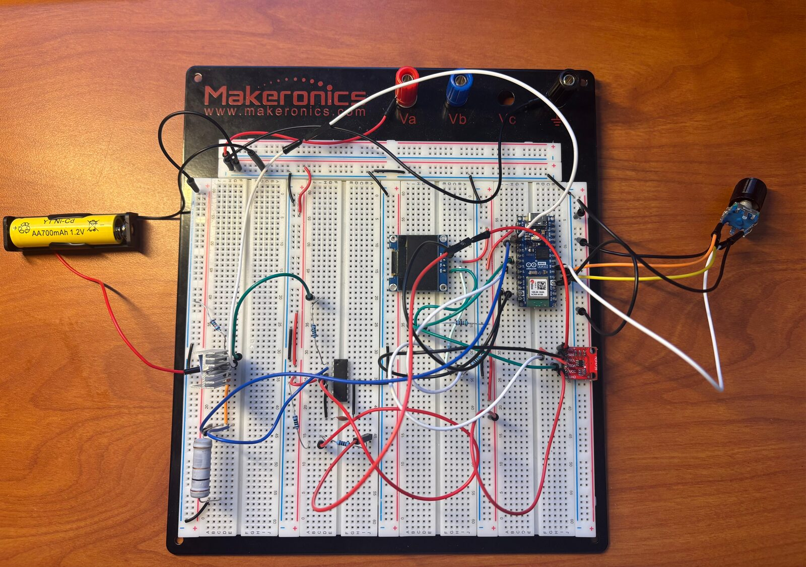
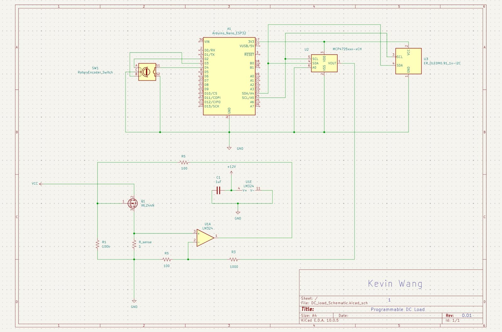

Programmable DC Electronic Load
A bench tool for validating how a DC power source actually behaves under load, before trusting it inside a larger system.

Overview
Before a DC power source gets integrated into a larger system, it needs to be verified against its rated voltage, current, and power output, not just at idle, but under realistic load. Rather than relying on whatever fixed loads I had on hand, I built a programmable electronic load: a circuit that can sink a precise, adjustable amount of current from a supply under test and report back exactly how that supply responds.
The result is a small bench instrument, controlled through an OLED display and rotary encoder, that lets me dial in a target current and watch how a power source's output voltage and stability hold up as the load increases.
How It Works
The core of the circuit is an op-amp feedback loop. An op-amp will always try to drive its output so that
the voltage at its two input pins is equal. I used that property directly: an ESP32 microcontroller sets a target current
by generating a reference voltage (V_ref) through an MCP4725 DAC, and the op-amp compares
that against the voltage measured across a 1Ω, 5 W sense resistor (V_sense) sitting
in series with an N-channel power MOSFET.
Because the sense resistor is exactly 1Ω, Ohm's law becomes very convenient.
V = I × R means the voltage across it is numerically equal to the current through it, so
0.10 V read across the resistor corresponds to about 0.10 A of load current. That makes the design
intent simple: V_ref and target current are meant to be a straight 1:1 match: 0.10 V in
should regulate to 0.10 A.
The voltage divider is integrated to ensure safety. It caps the maximum current the board can ever be
commanded to draw, so the LM324 and MOSFET can never regulate more current than the design was
rated for (capped at 3 A, the most the ESP32 side of the circuit is meant to output), even on a future
test at higher currents than the 0.05–0.30 A range used here. The current tests never approach that
ceiling, but the divider makes it a hard limit rather than trusting the firmware,
which matters most when a test is pushed further than before. Finer DAC control is a side effect of
this divider. Firmware drives the DAC 11× higher than the target current
value, and the 10 kΩ/1 kΩ voltage divider (1/11 ratio) steps that back down to the correct
V_ref before it reaches the op-amp. The same 1/11 factor is applied in reverse in firmware when
converting the DAC setting back into an amps value, so the OLED always displays actual load current rather
than the pre-divider DAC voltage.
Whenever V_sense drifts from V_ref, the op-amp's output adjusts the MOSFET's gate voltage,
opening or closing the channel partially, until the two match again. That loop is what lets the load hold a steady,
user-defined current regardless of small changes in the supply's output.
A real test use of the board looks like this:
- User sets the target current to 0.05 A via the rotary encoder.
- Firmware computes the desired
V_ref(0.05 V) and scales it 11×, commanding the DAC to output ~0.55 V. - The 10 kΩ/1 kΩ divider steps that back down to ~0.05 V.
- The LM324 receives that 0.05 V as its reference input.
- The op-amp drives the MOSFET gate until
V_sense≈ 0.05 V. - Load current settles at ≈ 0.05 A.
Design & Components
The circuit is built using various ICs and embedded components, each specific to its role in the feedback loop:
- N-channel power MOSFET (IRLZ44N), the variable element that sinks current from the supply under test.
- LM324 op-amp, compares reference and sense voltages and drives the MOSFET gate accordingly, leading to the sinking of current by the MOSFET.
- 1Ω / 5 W sense resistor, converts load current into a directly readable voltage at a 1:1 ratio.
- Arduino Nano ESP32, generates the current setpoint, reads live measurements, and drives the display.
- MCP4725 DAC (I2C), sets the current target; a 10 kΩ/1 kΩ voltage divider on its output hard-caps the maximum current the board can ever be commanded to draw at 3 A, protecting the LM324 and MOSFET on any future higher-current test. Firmware drives the DAC 11× above the target current to land on the correct 1:1
V_refafter the divider, and applies the same 1/11 factor in reverse so the OLED always reads out actual amps. - OLED display + rotary encoder, the user interface for setting and monitoring current in real time. Rotation of the encoder changes the load current setting, and the button turns the load on/off.

Simulation & Build Process
The circuit schematic was built in KiCAD (Fig. 2).
Before committing to the hardware, I ran the feedback loop portion of the circuit(comprised of the op-amp and MOSFET) through
LTSpice. At a 300 mA operating point, the simulated sense
current (I(R_sense)) and MOSFET drain current (Id(M1)) converged to the same
0.300 A value with the op-amp's two inputs settled to within a millivolt of each other, confirming the
feedback topology and gate drive would behave as intended. Firmware for the
ESP32 (reading the encoder, driving the DAC, and updating the OLED) was written and flashed through the
Arduino IDE.
The first build was prototyped on breadboard (Fig. 1) with a 1.2 V, 700 mAh battery cell as the source under test, so individual stages (the sense resistor readout, the DAC output, the display) could be probed and corrected independently before soldering anything down. Bench validation was done with hand-held multimeters, cross-checking the voltage across the sense resistor against the current the ESP32 was commanding, and comparing the supply's output voltage at rest against its output under increasing load.
Bench Testing & Results
Six load points were swept from 0.05 A to 0.30 A against the 1.2 V source, which measured
1.39 V open-circuit with no load applied. At every setpoint, measured V_ref and measured
V_sense matched closely, direct confirmation that the feedback loop was actively regulating
rather than just approximating the target.
| Setpoint | Measured I | Voltage Sag | Battery Power | Sense R Power | MOSFET Power |
|---|---|---|---|---|---|
| 0.05 A | 0.049 A | 0.070 V | 0.065 W | 0.002 W | 0.062 W |
| 0.10 A | 0.098 A | 0.110 V | 0.125 W | 0.010 W | 0.116 W |
| 0.15 A | 0.148 A | 0.150 V | 0.184 W | 0.022 W | 0.162 W |
| 0.20 A | 0.197 A | 0.188 V | 0.237 W | 0.039 W | 0.198 W |
| 0.25 A | 0.247 A | 0.230 V | 0.287 W | 0.061 W | 0.226 W |
| 0.30 A | 0.296 A | 0.270 V | 0.332 W | 0.088 W | 0.244 W |
Measured current tracked the commanded setpoint within about 2% across the full 0.05–0.30 A range, and source voltage sag scaled roughly linearly with load current, consistent with the battery's internal resistance (on the order of 1 Ω) rather than a loop-stability issue. As commanded current increased, the MOSFET gate and op-amp output voltage rose to keep tracking the target sense voltage, exactly as the feedback model predicts. While probing the MOSFET's source leg directly during the 0.10 A test, I found a reading that didn't match the sense node (0.231 V vs. 0.099 V); a later continuity check traced this to roughly 3 Ω of unwanted resistance in a breadboard jumper connection, not a fault in the regulation loop itself. The sense-node and op-amp readings agreed throughout.
Reflection & Next Steps
The core result (an op-amp feedback loop that holds a MOSFET at a commanded current within a couple percent) held up on both simulation and hardware. The main lesson from bench testing was that I should carefully calculate how the circuit behaves under different voltage and current settings before testing with higher values. When testing a first rendition of the circuit, I noticed a unusually high current feeding into the op-amp, leading to further investigation and the integration of the voltage divider. A project completed in small and calculated intervals is usually safer than one completed in a rush and without real testing.
Next steps: move the prototype from breadboard to a soldered board to eliminate connection resistance as a variable, adding a voltage divider ahead of the ESP32's ADC input for any future source under test above 3.3 V, as well as incorporating a usb-c adaptable input header to connect various forms of DC power sources such as power banks to the bench device. A demo video of the load in operation is linked in the repository below.